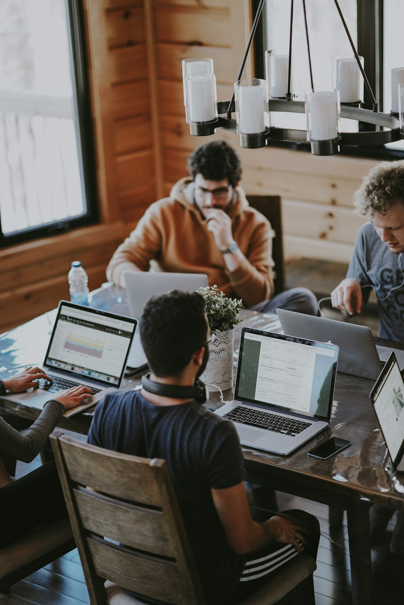

Clarity before complexity
Start with the people using your website. Straightforward navigation and useful features come first.
The people behind the pixels · 03
We bring people, design, and technology together to make digital experiences that feel clear, useful, and ready for what’s next.

The Visual approach / 01
Visual.co.ke takes a practical approach to digital work: understand the problem, make the experience clear, then build a reliable foundation.
Whether it’s a storefront, a publishing platform, or a custom application, we focus on the details your visitors notice and the infrastructure they don’t.
We believe the best work is a shared effort. That means asking the right questions, explaining our choices, and keeping your goals in view from first sketch to launch.
See what we mean →What guides us / 02
A few principles keep the work grounded, useful, and built to last.
Start with the people using your website. Straightforward navigation and useful features come first.
A beautiful page should load well, work on smaller screens, and respect slower connections.
Maintainable code and considered structures make your next chapter easier to build.
We make room for questions, explain decisions, and keep your goals at the centre.